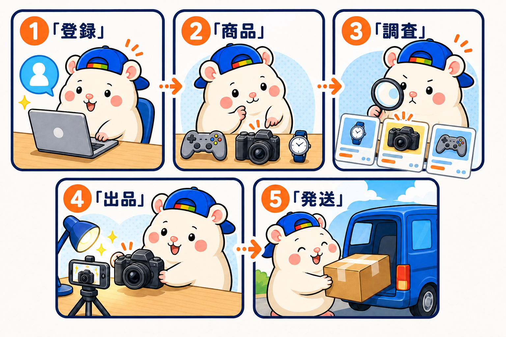
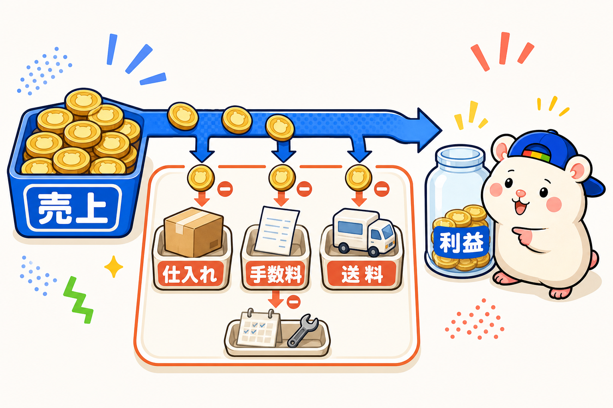

「eBayやりたいけど、なにから始めればいいの?」
よく聞かれます。
ぼくはeBay輸出を、人間の外注さん21名でやっていた時代があります。
月間の利益は200万円までいきました。
いまは、梱包発送以外ぜんぶAIでやっています。
その経験から、初心者向けにやり方をぜんぶ解説します。
この記事の順番どおりに進めれば、ゼロから最初の1品を売るところまでいけます。
eBayのやり方は、ざっくり5ステップ

さきに全体像です。
- アカウントをつくる
- 売るものを決める
- リサーチする
- 出品する
- 売れたら発送する
これだけです。
たこ焼き屋と同じです。
屋台を出して、メニューを決めて、値段を調べて、焼いて、渡す。
順番に見ていきます。
ステップ1: アカウントをつくる
必要なものは3つです。
- eBayのアカウント(無料)
- Payoneer(ペイオニア)の口座(売上を受け取る口座。無料)
- クレジットカード
登録は全部で1〜2時間くらい。
ぜんぶ画面の指示どおりに進めるだけです。
つまずいたら、スマホでAIに画面を見せて「次どうする?」と聞いてください。
登録代行に、お金を払う必要はないです。
ステップ2: 売るものを決める
最初の1品は、家にある不用品でいいです。
ゲーム、カメラ、フィギュア、時計。
日本の中古品は、海外でめちゃくちゃ人気です。
ここで大事なことをひとつ。
自分の好きなジャンルで戦う。
好きなジャンルは、商品の良し悪しが見えます。
それだけで、リサーチの速さが変わります。
ステップ3: リサーチする
リサーチとは「それがいくらで売れているか」を調べることです。
eBayには、売れた価格がぜんぶ公開されています。
商品名で検索して、「Sold Items」にチェックを入れるだけ。
過去に売れた値段の一覧が出ます。
- 売れた実績がある → 出品する価値あり
- 売れた実績がない → 見送り
これが基本です。
売れた値段から、仕入れ代・手数料・送料などを引いてプラスになるかを確認します。
ステップ4: 出品する
出品でやることは4つです。
- 写真を撮る(明るく。暗い写真は売れません)
- タイトルを書く(メーカー名・型番があれば必ず入れる)
- 説明文を書く(英語はAIに翻訳してもらう)
- 値段をつける(リサーチした相場に合わせる)
英語ができなくても大丈夫です。
ぼくも英語はできません。
AIに「この商品の説明文を英語で書いて」と頼めば終わりです。
値付けはメルカリで不用品を出すときと同じです。
・いくらくらいで売れているのかな？
・いくらくらいで出品されているのかな？
これを調べて値付けをするはずです。
eBayでもまったく同じです。
ステップ5: 売れたら発送する
売れたら、梱包して発送します。
発送はFedExやDHLと、eBay経由で契約できます。
送り状も画面から印刷するだけ。
郵便局に走る必要はないです。
FedEx・DHLの方が、集荷に来てくれます。
ここでひとつ実測の学びを。
安全な範囲でできる限り小さく梱包する。
送料は、配送先と荷物の大きさ・重さで変わります。
配送先と重さは変えられないので、大きさをできる限りおさえましょう。
梱包発送を制する者はeBayを制す。
お金の流れも知っておく

売上がぜんぶ利益ではないです。
ざっくり、売上から2〜3割が手数料と送料で消えます。
- 仕入れ代: 商品による
- eBayの手数料: 売上の15%前後
- 送料: 商品による
- 仕入れ代・手数料・送料などを引いた残りが利益
だから値付けのときに、仕入れ代・手数料・送料などを織り込んでおく。
これを忘れると「売れたのに赤字」になります。
ぼくは一度、ストアプラン(月額の出品枠)を見直さなかっただけで、月2.5万円の利益を捨てていました。
固定費は、最初に確認してください。
コンサルはいらない。AIがいる
最後にいちばん大事なことです。
eBayを調べると、80万円のコンサルやスクールの広告にぶつかります。
入らなくていいです。
初期設定も、リサーチも、英語も、トラブル対応も。
ぜんぶAIが知っています。
何をやるかは自分で決める。どうやるかはAIに聞く。AIにやってもらう。
ぼくはいま、AI社員20名とeBayをやっています。
AIはClaude codeのFableがおすすめです。
やり方は以下のClaude codeの教科書で学んでください。
https://brmk.io/1e0hae (紹介リンクです)
まとめ: 最初の1品を出してみる
eBayのやり方、5ステップでした。
- アカウントをつくる
- 売るものを決める
- リサーチする
- 出品する
- 売れたら発送する
完璧に準備してから始める必要はないです。
家の不用品を1個、出してみる。
それが初心者のいちばん正しいやり方です。
売れたときの「チャリン」という通知音は、けっこうクセになりますよ。